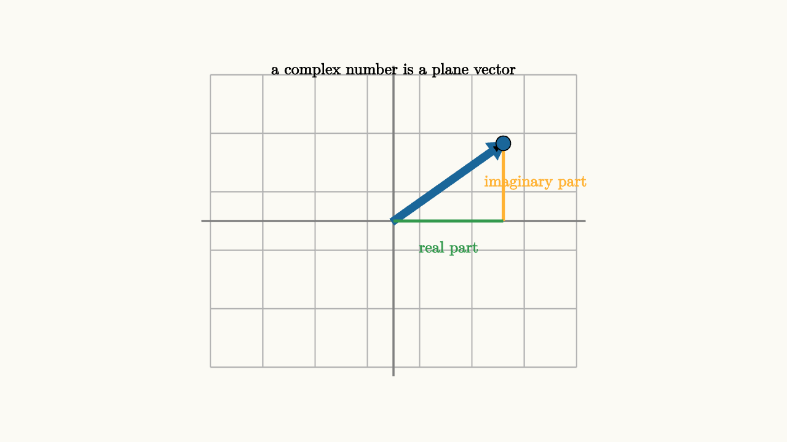

Complex Numbers Make Rotation Algebraic
The number $i$ begins with the equation
That statement looks strange on a number line. It becomes natural in the plane. Multiplying by $-1$ turns a number $180^\circ$ around the origin. Multiplying by $i$ is the halfway turn, a $90^\circ$ rotation. Do it twice, and the point faces the opposite direction:
A complex number
is a point or vector in the plane. The real part $a$ is the horizontal coordinate. The imaginary part $b$ is the vertical coordinate. The length is
The angle from the positive real axis is the argument of $z$.

source
background = [0.985, 0.98, 0.955, 1]
camera = Camera(4.3b)
let z = [1.2, 0.85, 0]
mesh diagram = block {
. stroke{LIGHT_GRAY, 1.2} LineGrid([-2, 2, 8], [-1.6, 1.6, 6], 1)
. stroke{GRAY, 2} Line(start: [-2.1, 0, 0], end: [2.1, 0, 0])
. stroke{GRAY, 2} Line(start: [0, -1.7, 0], end: [0, 1.7, 0])
. stroke{BLUE, 4} Arrow(start: [0, 0, 0], end: z)
. stroke{ORANGE, 3} Line(start: [z[0], 0, 0], end: z)
. stroke{GREEN, 3} Line(start: [0, 0, 0], end: [z[0], 0, 0])
. fill{BLUE} center{z} Circle(0.08)
. center{[0.6, -0.3, 0]} color{GREEN} Text("real part", 0.62)
. center{[1.55, 0.42, 0]} color{ORANGE} Text("imaginary part", 0.62)
. center{[0, 1.65, 0]} color{BLACK} Text("a complex number is a plane vector", 0.62)
}The real surprise comes from multiplication. Write two complex numbers in polar form:
and
Their product is
The lengths multiply, and the angles add. Complex multiplication is scale followed by rotation.
This one sentence explains many algebra facts. Multiplying by $i$ keeps length $1$ and adds an angle of $\frac{\pi}{2}$. Multiplying by $1+i$ scales by $\sqrt2$ and rotates by $\frac{\pi}{4}$. Squaring a complex number squares its length and doubles its angle.
source
background = [0.985, 0.98, 0.955, 1]
camera = Camera(4.4b)
let Vec = |angle, col, label| block {
let p = [1.15 * cos(angle), 1.15 * sin(angle), 0]
. stroke{col, 4.5} Arrow(start: [0, 0, 0], end: p)
. fill{col} center{p} Circle(0.08)
. center{1.25 * p} color{col} Text(label, 0.66)
}
let Plane = |angle, label| block {
. stroke{LIGHT_GRAY, 1.1} LineGrid([-1.7, 1.7, 6], [-1.7, 1.7, 6], 1)
. stroke{GRAY, 2} Line(start: [-1.8, 0, 0], end: [1.8, 0, 0])
. stroke{GRAY, 2} Line(start: [0, -1.8, 0], end: [0, 1.8, 0])
. Vec(angle, BLUE, label)
. center{[0, 1.82, 0]} color{BLACK} Text("multiplying by i rotates 90 degrees", 0.62)
}
"start at one"
mesh scene = Plane(angle: 0, label: "1")
play Write(0.8)
"multiply by i"
scene = Plane(angle: PI / 2, label: "i")
play Trans(1.0)
"multiply by i again"
scene = Plane(angle: PI, label: "-1")
play Trans(1.0)
"fourth turn"
scene = Plane(angle: 3 * PI / 2, label: "-i")
play Trans(1.0)The rectangular form also shows the rotation. Multiply $(a+bi)$ by $i$:
So the point $(a,b)$ becomes $(-b,a)$. That is exactly a $90^\circ$ counterclockwise rotation.
Complex numbers also make roots visible. The equation
asks for complex numbers whose length cubed is $1$ and whose angle tripled lands at a full turn. The length must be $1$. The angles are
So the three cube roots of $1$ sit evenly around the unit circle. Polynomial equations that seem purely symbolic often hide a rotation pattern in the complex plane.
The main lesson is that complex arithmetic turns plane motion into algebra. Addition moves by displacement. Multiplication rotates and scales. Powers repeat that rotation and scaling. Once the plane is allowed into algebra, identities like $i^2=-1$ stop being exceptions and start being geometry.
The rectangular multiplication formula shows the same structure in coordinates:
The real part $ac-bd$ looks like a dot-product style subtraction, and the imaginary part $ad+bc$ mixes the cross terms. This is exactly what a rotation-scaling matrix does:
Multiplication by $c+di$ is a linear transformation of the plane with a special form. Its columns are perpendicular and have the same length. That means it scales every direction equally and rotates the plane. Complex multiplication is a very tidy family of linear maps.
This viewpoint makes division clearer too. Dividing by a complex number means multiplying by its reciprocal. For
the conjugate is
Multiplying a number by its conjugate removes the rotation and leaves squared length:
So
Geometrically, the reciprocal reverses the angle and changes the length to its reciprocal. A number with length $2$ and angle $30^\circ$ has reciprocal length $\frac12$ and angle $-30^\circ$.
Euler's formula packages the rotation idea in one line:
Then multiplying by $e^{i\theta}$ means rotating by $\theta$. Powers become immediate:
That is the heart of De Moivre's formula:
The formula says that repeating a rotation $n$ times adds the angle $n$ times. Complex numbers let the algebra say exactly what the picture does.